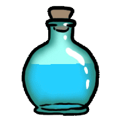

Welcome to my secret laboratory in space!
I have an
IMPORTANT
mission for you...
There are two potion bottles which each contain a
special power.
Choose wisely as it determines your
fate
Which one will you
choose
?
